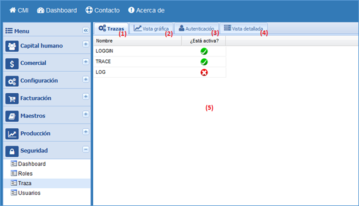
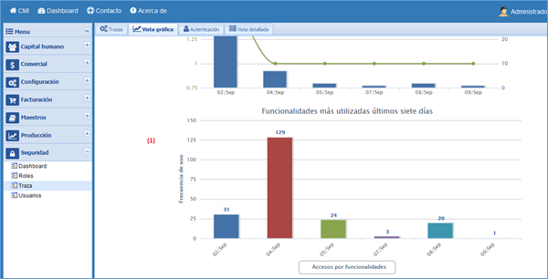
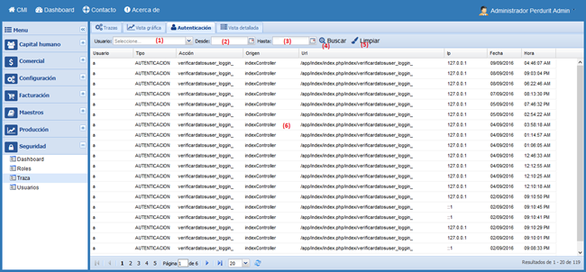
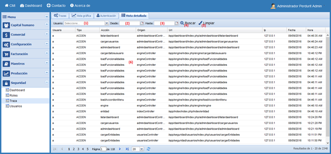

Ayuda en línea
Future Framework
Traza
Versión 1.0.0
Gestionar trazas
Ruta de acceso: Seguridad/Traza
Descripción de la funcionalidad
La funcionalidad “Traza” es la encargada de registrar toda la actividad que realicen los usuarios en el sistema, entiéndase la autenticación y el uso de las funcionalidades.

Gestionar trazas.
1. Pestaña de trazas, muestra las trazas soportadas por el sistema y las que se encuentran activadas.
2. Pestaña de vista gráfica, muestra un dashboard con estadística de las trazas.
3. Pestaña vista de autenticación, muestra las trazas de tipo autenticación.
4. Pestaña vista detallada, muestra una vista detallada de todas las trazas registradas en el sistema.
5. Listado de trazas, muestra las trazas configuradas en el sistema.
Vista gráfica
Muestra algunas estadísticas sobre las trazas registradas por el sistema, entre ellas la cantidad de accesos y funcionalidades accedidas, y las funcionalidades utilizadas en los últimos siete días.

Vista gráfica.
1. Gráficas, muestra las gráficas con estadísticas de las trazas.
Vista de autenticación
Muestra las trazas registradas por el sistema de tipo autenticación.

Vista de autenticación.
1. Usuario, listado de usuarios para filtrar las búsquedas.
2. Fecha desde, fecha de inicio para filtrar las búsquedas.
3. Fecha hasta, fecha de fin para filtrar las búsquedas.
4. Botón de buscar, filtra los datos de las trazas.
5. Botón de limpiar, limpia los datos filtrados y borra los resultados de la tabla número (6).
6. Listado de trazas de autenticación, muestra el listado de las trazas que son de tipo autenticación.
Vista detallada
Muestra el listado de todas las trazas registradas en el sistema.

Vista detallada.
1. Usuario, listado de usuarios para filtrar las búsquedas.
2. Fecha desde, fecha de inicio para filtrar las búsquedas.
3. Fecha hasta, fecha de fin para filtrar las búsquedas.
4. Botón de buscar, filtra los datos de las trazas.
5. Botón de limpiar, limpia los datos filtrados y borra los resultados de la tabla número (6).
6. Listado de trazas del sistema, muestra el listado de todas las trazas registradas en el sistema.